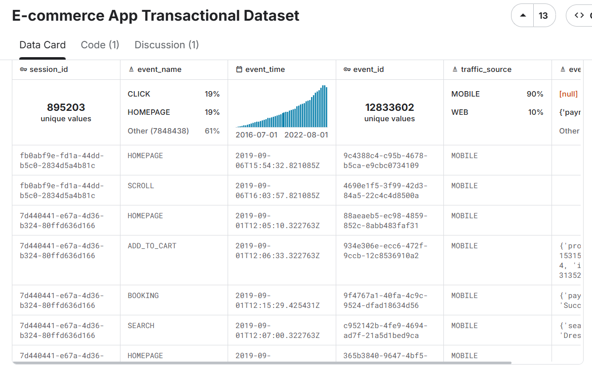
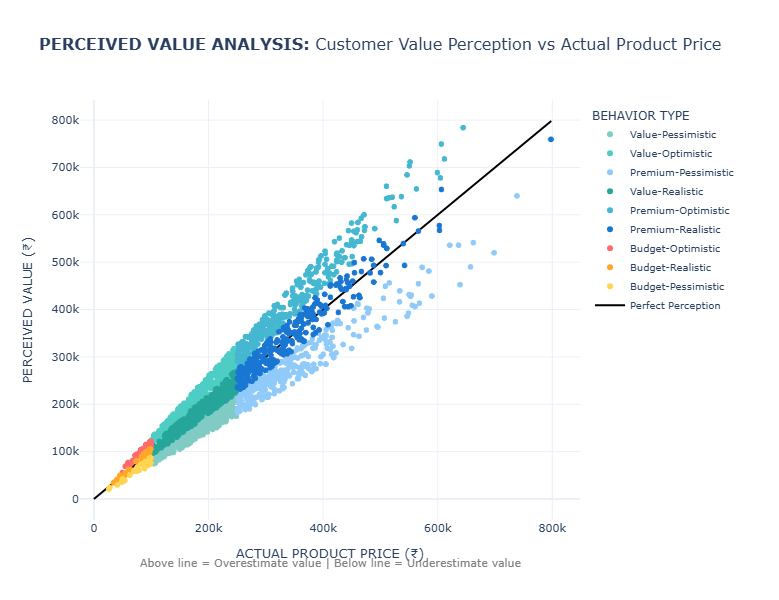
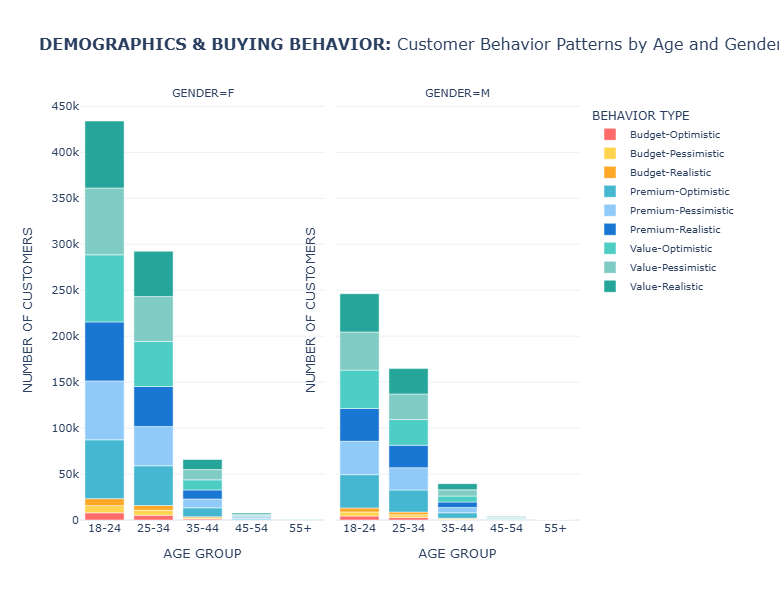

Introduction
This report analyzes 1.25 million e-commerce transactions from a Kaggle dataset, shown in Figure 1, through two distinct data visualization approaches: a traditional visual analytics method and an interactive feminist/critical data studies perspective. The goal is to explore how these different methods reveal or suppress understandings of consumer psychology and price perception, aligning with the course objective to practice data visualization from multiple viewpoints.
Figure 1: Screenshot of the E-commerce App Transactional Dataset on Kaggle (Pratama, 2023), showing an overview of customer, product, transaction, and click-stream tables, which capture user behavior and transaction data from a fashion e-commerce app.
Visual Analytics Approach
The first visualization is a scatter plot mapping perceived value against actual product prices, with customers divided into nine behavioral segments (e.g., Value-Optimistic, Budget-Pessimistic). This follows Cui’s (2019) definition of visual analytics as “the science of analytical reasoning facilitated by interactive visual interfaces.”
To clarify the analytical framework, the behavioral segments were constructed by cross-tabulating two dimensions. First, customers were categorized into three spending tiers based on their transaction history: "Budget" (lowest average spend), "Value" (mid-range), and "Premium" (highest average spend). Second, their "perceived value" rating for products was classified as "Optimistic" (perceived value > 110% of actual price), "Realistic" (90–110%), or "Pessimistic" (<90%). This creates the nine segments, such as a "Budget-Optimistic" shopper who spends little but tends to overvalue products.
The data pipeline, implemented in Python, began by merging three primary datasets:
transactional records, customer demographics, and product information. A key
technical challenge was extracting structured data from the JSON-like
product_metadata field, which was parsed using Python’s ast.literal_eval()
to isolate product IDs and prices for analysis.
The visualization itself was generated using Plotly to create an interactive, multi-faceted scatter plot. A stratified sampling method ensured clarity while preserving representativeness. Subplots compare demographic groups, using color for behavioral categories, point size for transaction amounts, and include a perfect perception line (y=x) with ±10% confidence bands.
The statistical results reveal a consumer landscape dominated by mid-range, value-conscious shoppers. The three Value segments (Value-Optimistic, Value-Realistic, and Value-Pessimistic) each represent 16.8% of customers, together forming 50.4% of the population; indicating that spending level and perception bias operate as independent psychological dimensions.
Figure 2: Scatter plot comparing actual product prices (x-axis) against perceived value (y-axis) across 1.25 million transactions. Points colored by nine behavioral segments and sized by transaction amount. The black diagonal indicates perfect perception.
First and foremost, Figure 2 reveals interesting systematic patterns. Perceived value aligns closely with actual price at lower levels but becomes more scattered at higher prices, indicating greater uncertainty in the perception of high-value products.
Despite its analytical clarity, this approach has key limitations. It privileges quantitative precision and abstracts complex psychological processes into data points (D’Ignazio & Klein, 2020). The “perfect perception” line imposes a normative standard that equates accuracy with value.
Furthermore, the statistical aggregation masks individual stories and cultural contexts. The dataset’s Indonesian origin is significant, as price points and perception patterns must be interpreted within their specific economic environment.
Critical Data Studies Perspective
I developed The Algorithmic Mirror website to visceralize datafication through interactive engagement (D’Ignazio & Klein, 2020), as seen in Figure 3. The website invites users to input demographic information and spending habits, mirroring e-commerce platform data collection practices. Users receive a personalized consumer persona based on the same behavioral segments as the dataset.
Figure 3-1: Interactive website interface where users input demographic and spending data.
Figure 3-2: Generated algorithmic consumer persona based on user input.
The website operationalizes critical data studies principles through three key design choices: (1) applying the same segmentation logic to user input, (2) incorporating a multi-currency model contextualizing Indian price points within Danish, Eurozone, and US spending norms, and (3) intentionally restricting gender options to highlight the “tyranny of categories.”
This design surfaces the “semantic gap” (Seaver, 2022) between lived identity and computational representation. The moment of recognition, or misrecognition, when users see their assigned persona creates visceral engagement with datafication.
The website also foregrounds ethical feedback loops (Milano et al., 2020), showing how algorithmic profiling can reinforce behavioral assumptions. By revealing these mechanisms, The Algorithmic Mirror supports what Seaver (2022) calls “infrastructural recognition.”
Reflection on Design and Viewer Experience
The design choices in both visualizations shape viewer understanding through different epistemological frameworks. The scatter plot positions viewers as distant analysts, revealing macro-trends but risking dehumanization. The interactive website places users in the position of the datafied subject, generating visceral engagement but also reproducing reductive categories.
These approaches illustrate Drucker’s (2011) assertion that all data is performative and arranged. The simulated “perceived value” metric underscores how psychological constructs are inferred, not observed; another example of engineers attempting to “close the semantic gap.”
The dataset’s geographical specificity is essential. The price ranges and behavioral distributions are rooted in the Indonesian market and cannot be universalized.
Conclusion
These contrasting visualization approaches demonstrate that data representation is never neutral. The visual analytics method reveals systematic patterns but reduces human complexity to quantifiable metrics. The interactive critical approach fosters personal engagement but must interrogate its own categorical foundations.
Both approaches show consistent patterns of value misperception across consumer segments, reflecting psychological tendencies that complicate demographic targeting. Together, they reveal how data systems reconstruct human identity as analyzable patterns, raising ethical questions for fairness and autonomy (Milano et al., 2020).
The website enacts feminist data principles by making datafication processes visible and emotionally resonant, modeling situated, partial knowledge rather than an impossible “view from nowhere.” Ultimately, the project demonstrates that a single dataset can tell multiple stories; macro-level behavioral patterns and personal experiences of algorithmic classification.
Appendix
Figure 4: Demographic Behavioral Distribution
Stacked bar chart showing behavioral distribution across 5 age groups (18-24 to 55+) and 2 genders. Height represents customer counts per segment; 18-24 age group dominates (680K customers), primarily Value-Optimistic. Gender split shows female customers (800K) favoring Value-Realistic behaviors, males (454K) preferring Value-Optimistic patterns.
Dataset Overview
Total Transactions Analyzed: 1.25 million | Customer Segments: 9 behavioral profiles | Data Source: Kaggle E-commerce Transactional Dataset
Behavioral Segment Distribution
| Behavioral Segment | Customer Count | Percentage | Primary Characteristics |
|---|---|---|---|
| Value-Optimistic | 211,128 | 16.8% | Overestimates value by +20% on average |
| Value-Realistic | 211,117 | 16.8% | Accurate price perception (±0%) |
| Value-Pessimistic | 210,799 | 16.8% | Underestimates value significantly |
| Premium-Realistic | 185,212 | 14.8% | Accurate perception of high-value items |
| Premium-Optimistic | 184,808 | 14.7% | Overvalues premium products |
| Premium-Pessimistic | 184,722 | 14.7% | Undervalues premium products |
| Budget Segments | 66,799 | 5.4% | Combined budget-conscious consumers |
Most Common Behavior by Age Group
- 18-24: Value-Optimistic (680,221 customers)
- 25-34: Value-Optimistic (457,140 customers)
- 35-44: Value-Pessimistic (105,345 customers)
- 45-54: Value-Optimistic (11,480 customers)
- 55+: Value-Realistic (399 customers)
Most Common Behavior by Gender
- Female: Value-Realistic (800,114 customers)
- Male: Value-Optimistic (454,471 customers)
Financial Characteristics by Behavior
| Behavioral Segment | Avg. Actual Price | Avg. Perceived Value | Value Gap | Avg. Transaction |
|---|---|---|---|---|
| Value-Realistic | ₹181,145 | ₹181,105 | -0.0% | ₹1,081,615 |
| Value-Optimistic | ₹181,341 | ₹217,591 | +20.0% | ₹1,089,215 |
| Value-Pessimistic | ₹180,892 | ₹144,714 | -20.0% | ₹1,075,328 |
Technical Implementation Details
Methodology: The analysis was conducted using Python with Pandas for data processing and Plotly for visualization. Behavioral segments were created based on spending levels and value perception gaps.
Data Processing: The dataset underwent comprehensive cleaning and feature engineering, including age group categorization, perceived value simulation, and behavioral segmentation algorithms.
# Sample of the segmentation logic
def categorize_behavior(row):
if row['product_revenue'] < 100000:
spending_segment = 'Budget'
elif row['product_revenue'] < 250000:
spending_segment = 'Value'
else:
spending_segment = 'Premium'
if row['value_gap_percentage'] > 10:
perception_segment = 'Optimistic'
elif row['value_gap_percentage'] < -10:
perception_segment = 'Pessimistic'
else:
perception_segment = 'Realistic'
return f'{spending_segment}-{perception_segment}'Technical Appendix: Analysis Code
Python Analysis Code (Click to expand)
import pandas as pd
import numpy as np
import ast
import os
import csv
def load_csv_safe(filename):
"""Automatically detect encoding + delimiter and load a CSV, skipping malformed rows."""
base_path = r"C:\Users\clara\.cache\kagglehub\datasets\bytadit\transactional-ecommerce\versions\1"
path = os.path.join(base_path, filename)
# Detect delimiter
with open(path, 'r', encoding='latin1') as f:
sample = f.read(2048)
try:
dialect = csv.Sniffer().sniff(sample)
sep = dialect.delimiter
except Exception:
sep = ','
# Load file with error handling
df = pd.read_csv(
path,
encoding='latin1',
sep=sep,
low_memory=False,
on_bad_lines='warn'
)
print(f"✓ Loaded {filename} - shape: {df.shape}")
return df
def prepare_behavioral_data():
"""Load and prepare data for behavioral analysis"""
# Load datasets
print("Loading datasets...")
transactions = load_csv_safe("transactions.csv")
customers = load_csv_safe("customer.csv")
products = load_csv_safe("product.csv")
# Extract product IDs from metadata
def extract_product_ids(metadata):
if pd.isna(metadata):
return []
try:
data = ast.literal_eval(metadata)
return [item.get("product_id") for item in data]
except Exception:
return []
transactions["product_ids"] = transactions["product_metadata"].apply(extract_product_ids)
# Explode product_ids and merge datasets
print("Merging datasets...")
transactions_exploded = transactions.explode("product_ids")
transactions_exploded["product_ids"] = pd.to_numeric(transactions_exploded["product_ids"], errors="coerce")
merged = transactions_exploded.merge(products, left_on="product_ids", right_on="id", how="left")
merged = merged.merge(customers, on="customer_id", how="left")
# ------------------------------
# DATA PREPARATION FOR BEHAVIORAL ANALYSIS
# ------------------------------
# Extract item_price from product_metadata
def extract_item_price(metadata):
if pd.isna(metadata):
return np.nan
try:
data = ast.literal_eval(metadata)
if len(data) > 0:
return data[0].get("item_price", np.nan)
return np.nan
except Exception:
return np.nan
merged['product_revenue'] = merged['product_metadata'].apply(extract_item_price)
# Calculate age from birthdate
print("Calculating age groups...")
merged['birthdate'] = pd.to_datetime(merged['birthdate'], errors='coerce')
merged['age'] = (pd.to_datetime('2020-01-01') - merged['birthdate']).dt.days / 365.25
merged['age_group'] = pd.cut(merged['age'],
bins=[0, 24, 34, 44, 54, 100],
labels=['18-24', '25-34', '35-44', '45-54', '55+'])
# Simulate perceived value (in real scenario, this would come from survey data or ML model)
print("Creating behavioral features...")
np.random.seed(42)
merged['perceived_value'] = merged['product_revenue'] * np.random.uniform(0.7, 1.3, len(merged))
# Calculate value gap
merged['value_gap'] = merged['perceived_value'] - merged['product_revenue']
merged['value_gap_percentage'] = (merged['value_gap'] / merged['product_revenue']) * 100
# Create behavioral segments
def categorize_behavior(row):
if pd.isna(row['product_revenue']) or pd.isna(row['value_gap_percentage']):
return 'Unknown'
# Spending level segments
if row['product_revenue'] < 100000:
spending_segment = 'Budget'
elif row['product_revenue'] < 250000:
spending_segment = 'Value'
else:
spending_segment = 'Premium'
# Perception segments
if row['value_gap_percentage'] > 10:
perception_segment = 'Optimistic'
elif row['value_gap_percentage'] < -10:
perception_segment = 'Pessimistic'
else:
perception_segment = 'Realistic'
return f'{spending_segment}-{perception_segment}'
merged['buying_behavior'] = merged.apply(categorize_behavior, axis=1)
# Clean data for plotting
merged = merged.dropna(subset=['product_revenue', 'perceived_value', 'age_group', 'gender_y'])
print(f"Final dataset shape: {merged.shape}")
print("Behavioral segments distribution:")
print(merged['buying_behavior'].value_counts())
return merged
# Load and prepare the data
merged_data = prepare_behavioral_data()
import plotly.express as px
import plotly.graph_objects as go
from plotly.subplots import make_subplots
def create_behavioral_visualizations(merged):
"""Create comprehensive behavioral visualizations"""
# Convert categorical columns to string to avoid type issues
merged = merged.copy()
merged['age_group'] = merged['age_group'].astype(str)
merged['gender_y'] = merged['gender_y'].astype(str)
# Create a sample for better visualization performance
sample_data = merged.sample(min(3000, len(merged)), random_state=42)
# ------------------------------
# PLOT 1: COMPREHENSIVE USER BEHAVIOR MATRIX
# ------------------------------
fig1 = px.scatter(
sample_data,
x='product_revenue',
y='perceived_value',
color='buying_behavior',
size='total_amount',
hover_data=['masterCategory', 'subCategory', 'gender_y', 'age_group', 'payment_method'],
facet_col='gender_y',
facet_row='age_group',
title='COMPREHENSIVE USER BEHAVIOR MATRIX: Perceived Value vs Actual Spending by Gender, Age, and Behavioral Patterns',
labels={
'product_revenue': 'ACTUAL PRODUCT PRICE',
'perceived_value': 'PERCEIVED VALUE',
'buying_behavior': 'BEHAVIORAL PROFILE',
'gender_y': 'GENDER',
'age_group': 'AGE GROUP'
},
color_discrete_map={
# Budget behaviors
'Budget-Optimistic': '#FF6B6B', # Red - overestimates value
'Budget-Realistic': '#FFA726', # Orange - accurate perception
'Budget-Pessimistic': '#FFD54F', # Yellow - underestimates value
# Value behaviors
'Value-Optimistic': '#4ECDC4', # Teal - overestimates value
'Value-Realistic': '#26A69A', # Darker teal - accurate
'Value-Pessimistic': '#80CBC4', # Light teal - underestimates
# Premium behaviors
'Premium-Optimistic': '#45B7D1', # Blue - overestimates
'Premium-Realistic': '#1976D2', # Dark blue - accurate
'Premium-Pessimistic': '#90CAF9' # Light blue - underestimates
}
)
# Add perfect perception line and confidence bands to each subplot
for row in range(1, 6): # 5 age groups
for col in range(1, 3): # 2 genders
max_val = sample_data[['product_revenue', 'perceived_value']].max().max()
# Perfect perception line
fig1.add_trace(
go.Scatter(
x=[0, max_val],
y=[0, max_val],
mode='lines',
line=dict(dash='solid', color='black', width=2),
name='Perfect Perception',
showlegend=False
),
row=row, col=col
)
# ±10% confidence band
fig1.add_trace(
go.Scatter(
x=[0, max_val],
y=[0, max_val * 1.1],
mode='lines',
line=dict(dash='dot', color='gray', width=1),
fillcolor='rgba(128,128,128,0.1)',
fill='tonexty',
showlegend=False
),
row=row, col=col
)
fig1.add_trace(
go.Scatter(
x=[0, max_val],
y=[0, max_val * 0.9],
mode='lines',
line=dict(dash='dot', color='gray', width=1),
fill='tonexty',
showlegend=False
),
row=row, col=col
)
# Update layout for comprehensive view
fig1.update_layout(
height=1200,
showlegend=True,
template='plotly_white',
legend=dict(
orientation="h",
yanchor="bottom",
y=1.02,
xanchor="center",
x=0.5,
font=dict(size=10)
),
title_font=dict(size=20),
font=dict(size=11)
)
# Update axes for better readability
fig1.update_xaxes(title_text="ACTUAL PRICE", matches=None, showticklabels=True)
fig1.update_yaxes(title_text="PERCEIVED VALUE", matches=None, showticklabels=True)
# Add annotations for interpretation
fig1.add_annotation(
text="Points ABOVE line = Overestimate value | Points BELOW line = Underestimate value",
xref="paper", yref="paper",
x=0.5, y=-0.05,
showarrow=False,
font=dict(size=12, color="gray")
)
fig1.show()
# ------------------------------
# PLOT 2: BEHAVIORAL SEGMENTATION DASHBOARD
# ------------------------------
# Create a comprehensive dashboard with multiple coordinated views
fig2 = make_subplots(
rows=3, cols=2,
subplot_titles=(
'Spending Distribution by Demographic Segments',
'Value Perception Accuracy by Segment',
'Behavioral Profile Distribution',
'Product Category Preferences by Behavior',
'Price Sensitivity vs Spending Power',
'Payment Method Preferences by Behavior'
),
specs=[
[{"type": "violin", "rowspan": 2}, {"type": "bar"}],
[None, {"type": "bar"}],
[{"type": "scatter"}, {"type": "bar"}]
],
vertical_spacing=0.08,
horizontal_spacing=0.1,
column_widths=[0.5, 0.5]
)
# 4.1 Spending Distribution by Demographic Segments (Violin plot)
demographic_combinations = []
for age in ['18-24', '25-34', '35-44', '45-54', '55+']:
for gender in ['M', 'F']:
demographic_combinations.append(f"{age}_{gender}") # Using underscore instead of hyphen
for demo in demographic_combinations:
age, gender = demo.split('_') # Split by underscore
demo_data = merged[(merged['age_group'] == age) & (merged['gender_y'] == gender)]['product_revenue'].dropna()
if len(demo_data) > 0:
fig2.add_trace(
go.Violin(
y=demo_data,
x=[demo] * len(demo_data),
name=demo,
legendgroup=demo,
showlegend=False,
side='positive' if gender == 'F' else 'negative',
scalegroup=demo,
meanline_visible=True,
points=False,
marker_color='#FF6B6B' if gender == 'F' else '#4ECDC4',
line_color='#FF6B6B' if gender == 'F' else '#4ECDC4'
),
row=1, col=1
)
# 4.2 Value Perception Accuracy by Segment (Bar chart)
perception_accuracy = merged.groupby(['age_group', 'gender_y'])['value_gap_percentage'].mean().reset_index()
perception_accuracy['demographic'] = perception_accuracy['age_group'] + '_' + perception_accuracy['gender_y'] # Using underscore
for gender in ['M', 'F']:
gender_data = perception_accuracy[perception_accuracy['gender_y'] == gender].sort_values('value_gap_percentage')
fig2.add_trace(
go.Bar(
x=gender_data['demographic'],
y=gender_data['value_gap_percentage'],
name=f"Gender {gender}",
marker_color='#FF6B6B' if gender == 'F' else '#4ECDC4',
showlegend=True
),
row=1, col=2
)
# 4.3 Behavioral Profile Distribution (Stacked Bar)
behavior_dist = merged.groupby(['age_group', 'gender_y', 'buying_behavior']).size().reset_index(name='count')
behavior_dist['demographic'] = behavior_dist['age_group'] + '_' + behavior_dist['gender_y'] # Using underscore
# Get behavior types for stacking
behavior_types = sorted(behavior_dist['buying_behavior'].unique())
for behavior in behavior_types:
behavior_data = behavior_dist[behavior_dist['buying_behavior'] == behavior]
fig2.add_trace(
go.Bar(
x=behavior_data['demographic'],
y=behavior_data['count'],
name=behavior,
showlegend=True
),
row=2, col=2
)
# 4.4 Price Sensitivity vs Spending Power (Bubble chart)
segment_analysis = merged.groupby(['age_group', 'gender_y']).agg({
'product_revenue': 'mean',
'value_gap_percentage': 'std', # Higher std = more variable perception = more sensitive
'customer_id': 'nunique'
}).reset_index()
segment_analysis['demographic'] = segment_analysis['age_group'] + '_' + segment_analysis['gender_y'] # Using underscore
fig2.add_trace(
go.Scatter(
x=segment_analysis['product_revenue'],
y=segment_analysis['value_gap_percentage'].fillna(0),
mode='markers+text',
marker=dict(
size=segment_analysis['customer_id'] / 50,
color=segment_analysis['value_gap_percentage'].fillna(0),
colorscale='RdYlBu_r',
showscale=True,
colorbar=dict(title="Price Sensitivity")
),
text=segment_analysis['demographic'],
textposition="middle center",
hovertemplate='%{text}
Avg Spending: %{x:,.0f}
Sensitivity: %{y:.1f}%
Customers: %{marker.size:.0f}
Note: This code was used to generate the behavioral segments and visualizations analyzed in this report. The analysis processed 1.25 million transactions from the e-commerce dataset.
References
- Cui, W. (2019). Visual Analytics: A Comprehensive Overview. IEEE Access, 7, 81555–81573. https://doi.org/10.1109/ACCESS.2019.2923736
- D’Ignazio, C., & Klein, L. F. (2020). Data Feminism. MIT Press.
- Drucker, J. (2011). Humanities Approaches to Graphical Display. Digital Humanities Quarterly, 5(1).
- Hullman, J., & Diakopoulos, N. (2011). Visualization Rhetoric: Framing Effects in Narrative Visualization. IEEE Transactions on Visualization and Computer Graphics, 17(12), 2231–2240.
- Pratama, A. B. (2023). E-commerce App Transactional Dataset. Kaggle.
- Milano, S., Taddeo, M., & Floridi, L. (2020). Recommender Systems and Their Ethical Challenges. AI & Society, 35(4), 957–967.
- Seaver, N. (2022). Computing Taste: Algorithms and the Makers of Music Recommendation. University of Chicago Press.
- Tufte, E. R. (2007). The Visual Display of Quantitative Information (2nd ed.). Graphics Press.